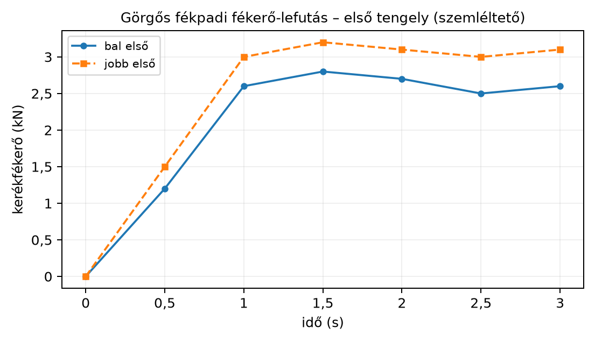

A tanuló a műhelyben leggyakrabban akkor találkozik fékvizsgálattal, amikor a műszaki vizsgára felkészített autó a próbapadon „megbukik”, vagy amikor az ügyfél arra panaszkodik, hogy fékezéskor a kormány rángat, a pedál remeg, illetve a fékút hosszú. Ebben az alfejezetben a fékberendezés vizsgálati és minősítési oldalát építjük fel: nem elsősorban azt kérdezzük, hogyan kell betétet cserélni, hanem azt, hogyan mérjük meg a fékrendszer tényleges fékerőit, hogyan értékeljük az eredményt, és hogyan keressük meg a rossz érték okát.
A korábbi alfejezetekben megismertük a kerékfékek felépítését (Kerékfékek) és a légfékrendszert (Légfékek). Most az ott tanult ismereteket használjuk a diagnosztikához. A hatósági műszaki vizsgán a fék a leggyakoribb hibapont, ezért a fékpadi kiértékelés gyakorlati haszna közvetlen.
Képzeljük el, hogy egy első kerekes autó az állomás görgős fékpadján
áll. A vizsgáztató az első tengelyt a görgőkre állította, a jármű
motorja alapjáraton jár (a fékrásegítő működéséhez), a sebességváltó
üresben (ellenőrizendő: a vizsgálóállomás eljárási rendje).
A pad görgői lassan forgatják a kerekeket. Amikor a vizsgáztató a
fékpedált nyomja, a fékbetétek a tárcsához szorulnak, és a kerék a
görgőt fékezi. A padban lévő erőmérő cellák a görgőre ható
reakciónyomatékból kiszámítják az egyes kerekek fékerőit. A kijelzőn
egyszerre látjuk a bal és jobb kerék görbéjét.

Az ábrán látszik, hogy a jobb első kerék fékerője magasabb, mint a balé. A vizsgálóberendezés ebből kerékfékerő-eltérést számol. Az egyes kerekek görbéje nem teljesen vízszintes, hanem kis hullámzást mutat – ez az erőingadozás, amely a tárcsa vagy a dob egyenlőtlenségére utalhat.
Megjegyzés. A szemléltető ábra értékei tanulási példák; a valós görbéket a vizsgálószoftver rögzíti és értékeli (ellenőrizendő: a vizsgálati szoftver beállításai).
Definíció. A jármű fékhatása () a teljes kifejtett fékerő és a jármű súlyerejének hányadosa, gyakran százalékban megadva:
ahol a mért összes fékerő (N vagy kN), a jármű súlyereje (N). Az egyes tengelyek fékhatását a tengely mért fékerőiből és a tengely tényleges terheléséből hasonlóan számítjuk:
Definíció. A kerékfékerő-eltérés az azonos tengelyen lévő jobb és bal kerék fékerő-különbsége, százalékban kifejezve. A vizsgálati gyakorlat általában a nagyobb fékerőhöz viszonyítja (ellenőrizendő: a hatályos vizsgálati előírás pontos képlete):
Definíció. Az erőingadozás a kerékfordulat során mért pillanatnyi fékerő maximális és minimális értékének eltérése, általában a maximális értékhez viszonyítva:
Nagy ingadozás jellemzően féktárcsa- vagy fékerő-eloszlási problémára, kopott kerékcsapágyra is utalhat.
Összefüggés. A közúti fékezési mérés során a jármű lassulásából számított fékhatás:
ahol a lassulás (m/s²), a kezdősebesség (m/s), a fékút (m). A fékhatás:
Ez az összefüggés a mozgási energia és a fékmunka egyenlőségéből is levezethető: , a fék által végzett munka , amelyből .
A fékhatás mérésére három fő módszert használunk:
A hatósági vizsgálat a fékhatás mérésén túl minősíti a kerékfékerő-eltérést és az erőingadozást, mert ezek a menetbiztonságot közvetlenül befolyásolják.
A görgős fékerőmérő próbapad minden vizsgálóállomáson megtalálható. Fő részei:
Az ábrán a vizsgált első tengely kerekei a görgőpárokon (1) állnak, a hátsó kerekek a talajon. A görgőket hajtó ingamotor (2) reakciónyomatékát erőmérő cella méri; ebből adódik a görgőkerületi erő, azaz a kerék fékereje. A középső tapintógörgő (3) a kerék megcsúszásakor lekapcsolja a padot, a súlymérő cella (4) a tengelyterhelést méri, a pedálerőmérő (5) a fékpedálon van, a kijelző (6) a bal és a jobb fékerőt mutatja. A HTML-animációban a pedálerő növelésével a fékerő nő, a tapadási határnál a tapintógörgő leállítja a padot (szemléltető számokkal).
A mérés elve az, hogy a gyártó által előírt pedálerő vagy légnyomás alkalmazásával a fékrendszer által kifejtett féknyomaték a görgőre átadódik. A pad nem a jármű lassulását, hanem a kerekek által kifejtett fékerőt méri. Ezért fontos, hogy a gumiabroncs megfelelő nyomású és mintázatú legyen, különben a kerék a görgőn megcsúszik, és a mért fékerő hamisan alacsony.
Figyelem. A fékpadi mérés közben a görgők forgó veszélyforrást jelentenek. A vizsgálat alatt a jármű alá nyúlni, a görgők közelébe lépni tilos. A mérést a vizsgálóberendezés kezelője irányítja; tanműhelyi környezetben oktató felügyeletével végezhető.
A fékminősítés három fő szempontja:
Előírás. A fékberendezés típusjóváhagyási követelményeit az ENSZ-EGB 13. (légfékes és nehéz járművek) és 13-H. (hidraulikus, könnyű járművek) előírása rögzíti (ellenőrizendő: hatályos változat és EU-átültetés). Az időszakos műszaki vizsgán a fékberendezés hatásosságát és a vizsgálati módszert a hatályos közúti járművek műszaki megvizsgálásáról szóló 5/1990. (IV. 12.) KÖHÉM rendelet és annak módszertani előírásai határozzák meg (ellenőrizendő: hatályos rendeletszöveg és vizsgálati eljárás). A pontos határértékeket a vizsgálószoftver tartalmazza, ezért itt csak tanulási példákat adunk meg.
A gyakorlatban az M1/N1 kategóriájú járműveknél a következő példaértékeket szokták alkalmazni (ellenőrizendő: a hatályos vizsgálati előírás):
| Vizsgált jellemző | Példaérték | Megjegyzés |
|---|---|---|
| Üzemi fék összfékhatás | ≥ 50% | A jármű súlyára vonatkoztatva |
| Rögzítőfék fékhatás | ≥ 16% | A vonatkozó vizsgálati módszer szerint |
| Kerékfékerő-eltérés (azonos tengelyen) | ≤ 30% | A fékpadi szoftver által számítva |
| Erőingadozás | ≤ 20% | A maximális fékerőhöz viszonyítva |
Az értékek tanulási példák (ellenőrizendő: a hatályos műszaki vizsgálati előírás pontos határértékei).
1. példa – Tengely fékhatása és eltérése. Egy személygépkocsi első tengelyén a görgős pad a következő fékerőket méri: bal első , jobb első . Az első tengelyterhelés . Számítsuk ki a tengely fékhatását és a kerékfékerő-eltérést.
Adott: , , . Keresett: , .
Képlet:
Behelyettesítés:
Ellenőrzés: A tengely fékhatása 74,1%, ami magas; az eltérés 12,5%, ami a példa határérték alatt van. ∎
2. példa – Erőingadozás. Ugyanezen a mérésen a bal első kerék fékerője a kerékfordulat során és között változik. Számítsuk ki az erőingadozást.
Adott: , . Keresett: .
Képlet:
Behelyettesítés:
Ellenőrzés: Az érték alatta marad a 20%-os példahatárnak. ∎
3. példa – Közúti fékvizsgálat lassulásból. Egy jármű közúti fékmérésénél a kezdősebesség , a mért fékút . Számítsuk ki a lassulást és a fékhatást.
Adott: , , . Keresett: , .
Képlet:
Behelyettesítés:
Ellenőrzés: 30 km/h-ról 6,5 méteres fékút körülbelül 5,3 m/s² lassulás, ami reálisan erős fékezés. ∎
4. példa – Légfék fékkamra ereje. Egy haszonjármű fékkamrájának hatásos membránfelülete . A fékkamra nyomása . Számítsuk ki a fékkamra rúderejét, ha a súrlódási és rugóvisszatérítő erőket elhanyagoljuk.
Adott: , . Keresett: .
Képlet:
Behelyettesítés:
Ellenőrzés: A valóságban a rudazat és a belső visszatérítő rugó csökkenti az erőt, ezért a mért érték kisebb lehet. ∎
Hibás példa. Ha a gumiabroncs nyomása a gyártói előírt 2,3 bar helyett 1,2 bar, akkor a görgőn a kerék csúszhat. A pad 2,8 kN helyett például 1,9 kN-t mérhet, és a jármű fékhatása nem éri el a határértéket. A hiba nem a fékrendszerben, hanem a vizsgálati feltételben van.
Ha a jármű görgős padon nem vizsgálható (például állandó összkerékhajtás, amikor a görgő csak az egyik tengelyt forgatja), a hatósági vizsgálat közúti méréssel végezhető. A járműre lassulásmérőt, pedálerőmérőt, sebesség-adatgyűjtőt szerelnek. A jármű a vizsgálati sebességre gyorsít, majd a vizsgáztató teljes fékezést végez. A berendezés rögzíti a lassulás időbeli lefutását.
A közúti mérésnél a fékhatást az átlagos lassulásból vagy a fékezési távolságból határozzák meg. A pedálerőt is mérik, mert a hatósági vizsgálat a vezető által kifejthető maximális pedálerőt is értékeli. A mérési jegyzőkönyv tartalmazza a kezdősebességet, a fékutat, az átlagos lassulást, a fékhatást és a pedálerőt.
Megjegyzés. A közúti vizsgálat veszélyes, ezért csak zárt pályán, a forgalomtól elzárt területen vagy az állomás által kijelölt útszakaszon végezhető. A mérést végző járműnek hatósági jelzéssel, a vizsgáztatónak megfelelő gyakorlattal kell rendelkeznie.
A légfékes autóbuszoknál és tehergépkocsiknál a fékhatás mérése mellett a légrendszer üzemi állapotát is vizsgálni kell, mert a fékhatás a rendelkezésre álló légnyomástól függ. A vizsgálati pontok:
A légfékrendszerrel szerelt járműveknél a fékhatáson kívül a fékerő-eloszlás is fontos: a terhelt és üres állapot közötti eltérést a fékerő-szabályozó (ALB) hivatott kiegyenlíteni. A vizsgálat során az ALB működését is ellenőrzik (ha van).
Figyelem. A rugóerőtárolós kamra kézi oldása csak vontatáshoz, a gyártói eljárás szerint végezhető. Vizsgálat közben a légtartály nyomása alatt áll, ezért a csatlakozókat ne bontsa meg; a légtartályból a kondenzvizet csak a gyártói leeresztőn engedje le.
A hidraulikus ABS-szel szerelt járművek fékrendszerének légtelenítése speciális, mert a levegő az ABS blokkban is rekedhet. A gyártói utasítás gyakran diagnosztikai eszközzel működteti az ABS szivattyút és a szelepeket, hogy a levegőt kimossa a blokkból. A következő lépéssor tanulási útmutató, nem helyettesíti a gyártói eljárást.
Biztonsági korlát. A feladat tanműhelyi környezetre, oktató felügyeletére és a gyártói javítási utasítás betartására vonatkozik; a megadott értékek tanulási példák.
Minőségellenőrzés: A légtelenítés után a fékpedálnak keménynek kell lennie; a pedálut hosszú, szivacsos érzése levegőre utal. A fékpadi mérés során a fékhatásnak és a kerékfékerő-eltérésnek a határérték alatt kell maradnia.
Cél: a jármű fékberendezésének fékhatását, kerékfékerő-eltérését és erőingadozását görgős fékpadon megmérni, kiértékelni.
Jármű- és adatazonosítás: olvassa ki a rendszámot, alvázszámot, futott kilométert. Rögzítse a tengelyterheléseket, a gumiabroncs méretét és nyomását, a fékrendszer típusát (hidraulikus/légfék, ABS/ESP).
Szükséges eszközök: görgős fékerőmérő próbapad, guminyomás-mérő, fékfolyadék-teszter (hidraulikus fékes járműnél), pedálerőmérő (ha a vizsgálat előírja).
Biztonsági korlát. A feladat tanműhelyi környezetre, oktató felügyeletére és a gyártói javítási utasítás betartására vonatkozik; a megadott értékek tanulási példák.
Munkalépések:
Ellenőrzési pontok: a mérés közben a kerék ne csússzon a görgőn; ha csúszást észlel, ellenőrizze a gumiabroncsot és a pad görgőit. A pad által mért fékerő és a tengelyterhelés arányából számított fékhatás feleljen meg a hatósági előírásnak.
Tipikus hibák: alacsony abroncsnyomás, szennyezett vagy nedves a pad görgője, a jármű görgőn való megcsúszása, a rögzítőfék nincs teljesen behúzva.
Dokumentálás: a vizsgálati jegyzőkönyv tartalmazza a járműadatokat, a mért fékerőket, a fékhatást, az eltérést, az ingadozást, a pedálerőt, a gumiabroncsnyomást és a minősítést. A jegyzőkönyvet a vizsgáztató írja alá.
Ügyfélpanasz: „A műszaki vizsgán a hátsó tengelyen nagy a fékerő-eltérés, a pad megbuktatott.”
Mérési adatok: a hátsó tengelyen a bal fékerő 1,4 kN, a jobb 2,2 kN; a tengelyterhelés 4,6 kN. A fékhatás a tengelyen: (1,4+2,2)/4,6=78%, ami jó, de az eltérés (2,2-1,4)/2,2=36%, ami a példa szerint meghaladja a 30%-ot.
Feltételezett okok: bal hátsó fékpofa utánállítója beragadva, fékdob kopott vagy deformált, féktömlő beszűkült, a bal hátsó féknyereg dugattyúja szorul (tárcsafékes hátsó tengelynél).
Ellenőrzés: a kereket emeljük meg, forgassuk meg – a féket kiengedve a keréknek szabadon kell forognia. A bal hátsó kerék oldott féknél szabadon forog, de fékezéskor gyengén fékez. A bal fékdobot lehúzva látható, hogy a bal utánállító beragadt, ezért a pofák és a dob közötti hézag nagy, a pofák csak részben fekszenek fel, így a bal oldal kisebb erővel fékez.
Javítás: az utánállító szerkezet tisztítása, kenése
a gyártó által előírt kenőanyaggal (a fékpofa súrlódó felületére nem
kerülhet kenőanyag). A dob belső átmérőjét megmérjük: 260 mm, a
megengedett legnagyobb 261,5 mm
(ellenőrizendő: gyártói kopási határ), tehát még
használható.
Ellenőrzés: ismételt fékpadi mérés; az eltérés 36%-ról 8%-ra csökken, a fékhatás 80%. A vizsgálat megfelelő.
Tanulság: a nagy fékerő-eltérés önmagában nem feltétlenül fékhenger- vagy rendszerhiba; gyakran a mechanikus utánállító vagy a szennyezett, korrodált alkatrész az ok.
A válaszok a Megoldások elején találhatók.
1. feladat (A). Határozza meg a fékhatás fogalmát, és adja meg képletét. Mi a különbség a jármű fékhatása és a tengely fékhatása között?
2. feladat (A). Egy személygépkocsi súlyereje 12,8 kN. A fékpadi mérésen az első tengelyen mért összes fékerő 5,6 kN, a hátsó tengelyen 3,2 kN. Számítsa ki a jármű összfékhatását százalékban.
3. feladat (B). Egy jármű közúti fékvizsgálatánál a kezdősebesség 50 km/h, a mért fékút 18,0 m. Számítsa ki a lassulást és a fékhatást.
4. feladat (B). Rendezze sorrendbe a görgős fékpadi mérés munkalépéseit: (a) a görgők elindítása, (b) a jármű azonosítása, (c) a fékpedál lenyomása a mérési protokoll szerint, (d) a gumiabroncsnyomás ellenőrzése, (e) a mérési jegyzőkönyv kiértékelése. Indokolja a sorrendet.
5. feladat (C). Miért veszélyesebb a nagy kerékfékerő-eltérés az első tengelyen, mint a hátsón? Magyarázza el az erőhatásokat.
6. feladat (D). Egy műszaki vizsgán a jobb első kerék fékerője 3,8 kN, a bal első 2,5 kN. A jármű kormánya fékezéskor erősen jobbra húz. Soroljon fel három lehetséges okot, és adja meg mindegyikhez a megfelelő diagnosztikai vizsgálatot.
Önellenőrzés – válaszok
1. feladat (A). Fékhatás: a jármű összes fékerőjének és súlyerejének hányadosa, százalékban: . A tengely fékhatása ugyanez a tengelyre vonatkoztatva, a tengelyterheléshez képest.
2. feladat (A). . .
3. feladat (B). . . .
4. feladat (B). Helyes sorrend: b) jármű azonosítása, d) gumiabroncsnyomás ellenőrzése, a) görgők elindítása, c) fékpedál lenyomása, e) kiértékelés. Indoklás: a mérés csak azonosítás és előkészítés után végezhető, a kiértékelés a mérés után.
5. feladat (C). Az első tengelyen a kerékfékerő-eltérés közvetlenül hat a kormányzott kerekekre: ha a jobb oldali kerék erősebben fékez, a jármű jobbra fordul, a vezetőnek ellentartása szükséges. A hátsó tengelyen az eltérés inkább a jármű farát billenti, ami kipörgéshez vezethet, de az első tengelyi eltérés a kormányozhatóságot közvetlenül veszélyezteti. Fékerő-eltérés okozta legyezés: a két kerék fékerő-különbsége nyomatékot ad a jármű függőleges tengelye körül.
6. feladat (D). Lehetséges okok és vizsgálatok: - Bal első féknyereg dugattyú szorul: a dugattyú visszanyomhatósága, vezetőcsapok szabad mozgása, féknyereg hőmérséklete. - Bal első féktömlő belül beszűkült: féknyomás mérése a tömlőnél, a fék felengedése utáni szivárgás. - Bal első fékbetét üvegesedett/szennyezett: betét- és tárcsafelület szemrevételezése, vastagságmérés. - Ritkábban a jobb oldal túl erős fékhatása is okozhatja (pl. olajos vagy új, még be nem futott betétpár csak az egyik oldalon); ezt a betétek összehasonlításával kell kizárni.
Az eltérés: , ez meghaladja a 30%-os példahatárt.
A fékberendezés hatósági és diagnosztikai vizsgálatának központi eleme a görgős fékerőmérő próbapad, amely a tengelyeket görgőkkel forgatja, és a kerekek fékerőit erőmérő cellákkal méri. A fékhatás a mért fékerő és a jármű súlyerejének hányadosa (), a tengely fékhatása a tengelyterhelésre vonatkozik. A minősítés a hatásosságon kívül a kerékfékerő-eltérést és az erőingadozást is értékeli; ezek határértékeit a hatályos vizsgálati előírás tartalmazza (ellenőrizendő). A nagy eltérés fékezéskor elfordíthatja a járművet, az ingadozás a tárcsa/dob deformációjára utal. A közúti mérés a lassulásból számol fékhatást (, ), ha a görgős pad nem alkalmazható. Légfékes járműveknél a légnyomás, tömítettség, a rugóerőtárolós rögzítőfék és a fékerő-szabályozó működését is ellenőrzik. Az ABS légtelenítésekor a gyártói diagnosztikai funkció szükséges, mert a levegő az ABS blokkban rekedhet. Továbbvitt eredmény. A fékpadi kiértékelés során kapott fékerő- és fékhatás-értékeket a Fékjavítás alfejezetben az alkatrészcsere utáni ellenőrző mérésre, a Próbavizsga és önértékelés alfejezetben pedig a komplex vizsgafeladat értékelésére használjuk fel.
Forrástípusok: ENSZ-EGB 13. és 13-H. előírás a fékberendezésekre (ellenőrizendő: hatályos változatok); magyar 5/1990. (IV. 12.) KÖHÉM rendelet a közúti járművek műszaki megvizsgálásáról és a hatályos vizsgálati módszertani előírás (ellenőrizendő); gyártói javítási utasítások a légtelenítéshez, fékkamra-adatok, kopási határok, meghúzási nyomatékok. A fejezetben szereplő határértékek, példa fékerő- és ingadozás-értékek tanulási példák, nem helyettesítik a hatályos vizsgálati határértékeket vagy a gyártói adatokat.